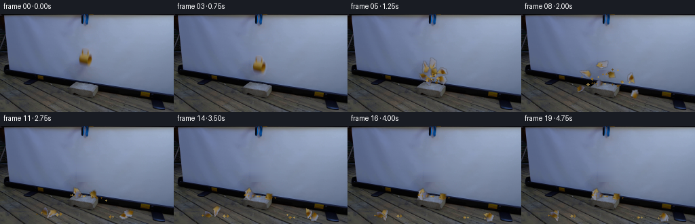
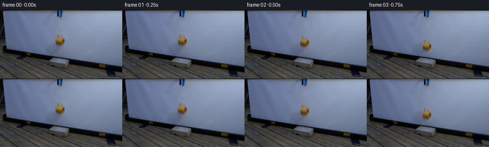

CODING AGENTS AS PIXEL WORLD MODELS
traex/GPT-5.6-Sol · 0126
点击播放 · 原生 RGB 像素
逐轮保存的候选
回放视频、检查图与代码变化。
每份候选均可单独播放。实际图片检查记录在下方工具轨迹中。
候选 01播放与检查图
点击播放 · 原生 RGB 像素


展开代码变化
--- 上一保存版本
+++ 本次保存版本
@@ -0,0 +1,300 @@
+from pathlib import Path
+
+import cv2
+import numpy as np
+from PIL import Image
+
+import artifact_io
+
+
+ROOT = Path(__file__).resolve().parent
+H, W = 144, 256
+
+
+def over(dst, color, alpha):
+ """Alpha composite either an RGB image or one RGB color onto dst."""
+ a = np.clip(alpha, 0.0, 1.0)[..., None]
+ dst[:] = dst * (1.0 - a) + np.asarray(color, np.float32) * a
+
+
+def affine_layer(rgb, alpha, center, dx, dy, angle):
+ mat = cv2.getRotationMatrix2D(tuple(center), angle, 1.0)
+ mat[:, 2] += (dx, dy)
+ wrgb = cv2.warpAffine(
+ rgb, mat, (W, H), flags=cv2.INTER_LINEAR,
+ borderMode=cv2.BORDER_CONSTANT, borderValue=(0, 0, 0)
+ )
+ wa = cv2.warpAffine(
+ alpha, mat, (W, H), flags=cv2.INTER_LINEAR,
+ borderMode=cv2.BORDER_CONSTANT, borderValue=0
+ )
+ return wrgb, wa
+
+
+def make_clean_plate(src):
+ """Recover the smooth projection screen that is hidden by the mug."""
+ plate = src.astype(np.float32).copy()
+ # The screen is a very smooth blue-gray gradient here. Interpolate each
+ # scan line from uncontaminated samples on both sides of the cup.
+ for y in range(46, 82):
+ left = np.median(src[y, 108:113].astype(np.float32), axis=0)
+ right = np.median(src[y, 141:147].astype(np.float32), axis=0)
+ for x in range(113, 141):
+ u = (x - 112.0) / 29.0
+ plate[y, x] = left * (1.0 - u) + right * u
+ # A tiny vertical blend prevents the repaired area from acquiring a
+ # conspicuously perfect texture compared with the photographed screen.
+ smooth = cv2.GaussianBlur(plate, (3, 3), 0.45)
+ plate[47:81, 112:142] = (
+ plate[47:81, 112:142] * 0.72 + smooth[47:81, 112:142] * 0.28
+ )
+ return plate
+
+
+def make_mug_mask():
+ # Hand-traced silhouette. It includes the cup's small right-hand handle
+ # and the antialiased edge, but none of the blue projection screen.
+ points = np.array([
+ [122, 49], [128, 49], [131, 52], [132, 57], [135, 59],
+ [137, 63], [137, 69], [135, 73], [134, 77], [131, 79],
+ [126, 78], [121, 78], [118, 75], [116, 71], [115, 64],
+ [117, 59], [119, 57], [119, 52]
+ ], np.int32)
+ hard = np.zeros((H, W), np.uint8)
+ cv2.fillPoly(hard, [points], 255)
+ # Keep the interior opaque while giving the outermost half-pixel a soft,
+ # camera-like edge.
+ return cv2.GaussianBlur(hard.astype(np.float32) / 255.0, (3, 3), 0.42)
+
+
+SHARD_POLYGONS = [
+ [(116, 59), (122, 50), (125, 61), (121, 65), (116, 64)],
+ [(122, 49), (129, 50), (132, 58), (129, 64), (125, 61)],
+ [(116, 64), (121, 65), (123, 70), (119, 75), (116, 71)],
+ [(121, 65), (125, 61), (130, 66), (126, 72), (123, 70)],
+ [(125, 61), (134, 59), (137, 64), (136, 70), (130, 66)],
+ [(119, 75), (123, 70), (126, 72), (127, 78), (121, 78)],
+ [(126, 72), (130, 66), (136, 70), (134, 77), (127, 78)],
+]
+
+
+VELOCITIES = [
+ (-25.0, -25.0), (-8.0, -35.0), (-32.0, -13.0),
+ (7.0, -31.0), (29.0, -23.0), (-15.0, -7.0), (36.0, -9.0)
+]
+
+
+def build_shards(mug_alpha):
+ shards = []
+ for idx, poly in enumerate(SHARD_POLYGONS):
+ pmask = np.zeros((H, W), np.uint8)
+ p = np.asarray(poly, np.int32)
+ cv2.fillPoly(pmask, [p], 255)
+ a = mug_alpha * (pmask.astype(np.float32) / 255.0)
+ moments = cv2.moments(p)
+ center = (
+ moments["m10"] / moments["m00"],
+ moments["m01"] / moments["m00"],
+ )
+ shards.append((a, center, VELOCITIES[idx]))
+ return shards
+
+
+def support_height(x, y):
+ # Perspective-correct top of the concrete block; after a chip passes an
+ # edge it falls to the work surface visible behind and beside the block.
+ if 104.0 <= x <= 149.0 and y < 119.0:
+ return 104.0 + 0.09 * (x - 126.0)
+ return 134.0 + 0.025 * (x - 126.0)
+
+
+def shard_pose(center, velocity, duration, shard_index):
+ """Small deterministic rigid-body flight with bounces and friction."""
+ x, y = center[0], center[1] + 24.0
+ vx, vy = velocity
+ angle = 0.0
+ spin = (-1.0 if shard_index % 2 else 1.0) * (78.0 + 17.0 * shard_index)
+ radius = 2.1 if shard_index not in (1, 4) else 2.8
+ dt = 1.0 / 160.0
+ steps = int(round(duration / dt))
+ resting = False
+ for _ in range(steps):
+ if resting:
+ break
+ vy += 58.0 * dt
+ x += vx * dt
+ y += vy * dt
+ angle += spin * dt
+ floor = support_height(x, y) - radius
+ if y >= floor and vy > 0:
+ y = floor
+ impact = vy
+ vy = -vy * (0.39 if impact > 18.0 else 0.25)
+ vx *= 0.73
+ spin *= 0.61
+ if impact < 7.0:
+ vy = 0.0
+ vx = 0.0
+ spin = 0.0
+ resting = True
+ return x, y, angle
+
+
+def draw_soft_shadow(frame, center, axes, opacity):
+ mask = np.zeros((H, W), np.float32)
+ cv2.ellipse(mask, tuple(map(int, center)), tuple(map(int, axes)), 0, 0, 360,
+ float(opacity), -1, cv2.LINE_AA)
+ mask = cv2.GaussianBlur(mask, (0, 0), 2.0)
+ over(frame, np.array([18, 18, 17], np.float32), mask)
+
+
+def crack_mug(frame, mug_alpha, src, dy):
+ rgb, alpha = affine_layer(src, mug_alpha, (126.0, 64.0), 0.0, dy, 2.0)
+ over(frame, rgb, alpha)
+ # Fine, irregular cracks become visible at the instant of impact.
+ crack = np.zeros((H, W), np.float32)
+ paths = [
+ np.array([[126, 84], [124, 89], [127, 93], [123, 99]], np.int32),
+ np.array([[126, 89], [131, 92], [129, 98]], np.int32),
+ np.array([[123, 91], [119, 94], [118, 98]], np.int32),
+ ]
+ for path in paths:
+ cv2.polylines(crack, [path], False, 0.72, 1, cv2.LINE_AA)
+ over(frame, np.array([60, 39, 9], np.float32), crack)
+
+
+def draw_dust(frame, elapsed):
+ if elapsed < 0.0 or elapsed > 1.15:
+ return
+ cloud = np.zeros((H, W), np.float32)
+ # A low, quickly dissipating puff of pale ceramic/concrete dust.
+ for j in range(8):
+ phase = 0.83 * j
+ x = 126.0 + np.sin(phase) * (3.0 + 13.0 * elapsed)
+ y = 103.0 - (2.5 + (j % 3)) * elapsed + abs(np.cos(phase)) * 2.0
+ radius = 1.4 + 2.1 * elapsed + 0.22 * (j % 2)
+ cv2.circle(cloud, (int(round(x)), int(round(y))),
+ max(1, int(round(radius))), 1.0, -1, cv2.LINE_AA)
+ cloud = cv2.GaussianBlur(cloud, (0, 0), 1.15 + elapsed)
+ cloud *= max(0.0, 0.20 * (1.0 - elapsed / 1.15))
+ over(frame, np.array([150, 144, 126], np.float32), cloud)
+
+
+def debris_pose(index, elapsed):
+ # Tiny chips use the same gravity as the larger pieces, but are allowed to
+ # skid farther across the work surface.
+ rng = np.random.default_rng(3100 + index)
+ angle = rng.uniform(0.0, np.pi * 2.0)
+ speed = rng.uniform(18.0, 48.0)
+ vx = np.cos(angle) * speed
+ vy = -abs(np.sin(angle)) * speed - rng.uniform(3.0, 16.0)
+ x, y = 126.0 + rng.uniform(-3, 3), 100.0 + rng.uniform(-2, 2)
+ dt = 1.0 / 120.0
+ for _ in range(int(round(elapsed / dt))):
+ vy += 60.0 * dt
+ x += vx * dt
+ y += vy * dt
+ floor = support_height(x, y) - 0.8
+ if y > floor and vy > 0:
+ y = floor
+ if abs(vy) < 7.0:
+ vy = 0.0
+ vx *= 0.35
+ else:
+ vy *= -0.28
+ vx *= 0.66
+ return x, y
+
+
+def draw_debris(frame, elapsed):
+ layer = np.zeros((H, W), np.float32)
+ shades = [
+ np.array([137, 105, 39], np.float32),
+ np.array([94, 65, 15], np.float32),
+ np.array([164, 139, 78], np.float32),
+ ]
+ for j in range(20):
+ x, y = debris_pose(j, elapsed)
+ if -2 <= x < W + 2 and -2 <= y < H + 2:
+ a = 0.84 if elapsed < 2.6 else 0.72
+ cv2.circle(layer, (int(round(x)), int(round(y))),
+ 1 if j % 5 else 2, a, -1, cv2.LINE_AA)
+ # Composite each shade through just the newly occupied local area.
+ local = np.zeros_like(layer)
+ cv2.circle(local, (int(round(x)), int(round(y))),
+ 1 if j % 5 else 2, a, -1, cv2.LINE_AA)
+ over(frame, shades[j % len(shades)], local)
+
+
+def render():
+ src_u8 = np.asarray(Image.open(ROOT / "first_frame.png").convert("RGB"))
+ assert src_u8.shape == (H, W, 3)
+ src = src_u8.astype(np.float32)
+ clean = make_clean_plate(src)
+ mug_alpha = make_mug_mask()
+ shards = build_shards(mug_alpha)
+
+ frames = []
+ for fi in range(20):
+ if fi == 0:
+ frames.append(src_u8.copy())
+ continue
+
+ # One held frame emphasizes that the locked-off blue-black grabber has
+ # let go, rather than the camera itself moving.
+ if fi == 1:
+ frames.append(src_u8.copy())
+ continue
+
+ frame = clean.copy()
+
+ if fi <= 4:
+ # Accelerating free fall sampled at the specified constant 4 fps.
+ drops = {2: 3.0, 3: 11.0, 4: 24.0}
+ dy = drops[fi]
+ draw_soft_shadow(frame, (126, 103), (5 + fi, 2), 0.07 + fi * 0.018)
+ if fi < 4:
+ rgb, alpha = affine_layer(src, mug_alpha, (126.0, 64.0),
+ 0.0, dy, 0.5 * (fi - 1))
+ over(frame, rgb, alpha)
+ else:
+ crack_mug(frame, mug_alpha, src, dy)
+ draw_dust(frame, 0.0)
+ else:
+ elapsed = (fi - 4) / 4.0
+ draw_dust(frame, elapsed)
+
+ # Broad contact shadows anchor the larger pieces to the block and
+ # table as they settle.
+ for si, (_, center, velocity) in enumerate(shards):
+ x, y, _ = shard_pose(center, velocity, elapsed, si)
+ floor = support_height(x, y)
+ if floor - y < 9.0:
+ draw_soft_shadow(frame, (x + 1, floor), (2, 1), 0.10)
+
+ for si, (salpha, center, velocity) in enumerate(shards):
+ x, y, angle = shard_pose(center, velocity, elapsed, si)
+ dx, dy = x - center[0], y - center[1]
+ rgb, alpha = affine_layer(src, salpha, center, dx, dy, angle)
+
+ # A dark ochre half-pixel edge reads as the unglazed broken
+ # ceramic thickness when a piece turns in flight.
+ edge = cv2.dilate(alpha, np.ones((3, 3), np.uint8), iterations=1) - alpha
+ edge = np.clip(edge * 0.33, 0.0, 0.22)
+ over(frame, np.array([68, 47, 15], np.float32), edge)
+ over(frame, rgb, alpha)
+
+ draw_debris(frame, elapsed)
+
+ frames.append(np.clip(np.rint(frame), 0, 255).astype(np.uint8))
+
+ result = np.stack(frames, axis=0)
+ # Contract-critical invariant: no resampling or compositing may touch f00.
+ result[0] = src_u8
+ return result
+
+
+if __name__ == "__main__":
+ frames = render()
+ artifact_io.save(frames, ROOT)
+
可观测工具轨迹
实际执行的命令与返回图片。
命令 1exit 0
/bin/bash -lc "cat prompt.txt && printf '\\n--- GENERATION_RULES ---\\n' && cat GENERATION_RULES.md"
命令 2exit 0
/bin/bash -lc "find . -maxdepth 2 -type f -printf '%p\\n' | sort && printf '\\n--- IMAGE INFO ---\\n' && python3 - <<'PY'
from PIL import Image
im=Image.open('first_frame.png')
print(im.mode, im.size)
print('extrema', im.getextrema())
PY"命令 3exit 0
/bin/bash -lc "python3 - <<'PY'
from PIL import Image
import numpy as np
from collections import Counter, deque
im=np.array(Image.open('first_frame.png'))
h,w,_=im.shape
# coarse color quant count
q=(im//16)*16
c=Counter(map(tuple,q.reshape(-1,3)))
print('top quant colors')
for col,n in c.most_common(30): print(col,n)
# 4x4 grid mean/max/min/luma and rgb
print('\\nblock means 16x12 (each 16x12 px):')
for by in range(12):
row=[]
for bx in range(16):
a=im[by*12:(by+1)*12,bx*16:(bx+1)*16].mean((0,1)).astype(int)
row.append('%02x%02x%02x'%tuple(a))
print(' '.join(row))
# masks basic
masks={
'yellow':(im[:,:,0]>75)&(im[:,:,0]>im[:,:,1]*1.25)&(im[:,:,1]>35)&(im[:,:,2]<50),
'blue':(im[:,:,2]>im[:,:,0]*1.35)&(im[:,:,2]>im[:,:,1]*1.15)&(im[:,:,2]>35),
'bright':im.mean(2)>100,
'gray':(im.max(2)-im.min(2)<15)&(im.mean(2)>30),
}
for k,m in masks.items():
ys,xs=np.where(m);print(k,len(xs), (xs.min(),ys.min(),xs.max(),ys.max()) if len(xs) else '')
# connected comps
import cv2
n,lab,stats,cen=cv2.connectedComponentsWithStats(m.astype('uint8'),8)
print(sorted([tuple(x) for x in stats[1:]],key=lambda x:x[4],reverse=True)[:12])
# ASCII classes every 3x3
print('\\nASCII classes 3x3 avg')
chars=[]
for y in range(0,h,3):
s=''
for x in range(0,w,3):
r,g,b=im[y:y+3,x:x+3].mean((0,1))
lum=(r+g+b)/3
if r>g*1.28 and g>b*1.4 and r>65: ch='Y'
elif b>r*1.25 and b>g*1.08 and b>35: ch='B'
elif lum>120: ch='W'
elif lum>85: ch='w'
elif lum>55: ch='g'
elif lum>32: ch='.'
else: ch=' '
s+=ch
print(s)
PY"命令 4exit 0
/bin/bash -lc "cat artifact_io.py && python3 - <<'PY'
from PIL import Image
import numpy as np
im=np.array(Image.open('first_frame.png'))
# Print detailed crop classes x90:155 y0:125 at 1 px compressed 2x2 maybe ANSI omitted. Quant values and edges.
# Make nearest-neighbor enlarged PPM maybe not visible. output ascii 1 char per pixel based relative color
for y in range(0,120,2):
s=''
for x in range(85,165,2):
a=im[y:y+2,x:x+2].mean((0,1)); r,g,b=a; lum=a.mean(); spread=max(a)-min(a)
# classify color/object based local
if r>g*1.25 and g>b*1.25 and r>65: c='Y'
elif r>g*1.12 and r>b*1.18 and r>50: c='y'
elif b>r*1.45 and b>g*1.2: c='U'
elif b>r*1.2 and b>g*1.08: c='b'
elif lum<18:c='#'
elif lum<35:c='@'
elif lum<55:c='O'
elif lum<75:c='o'
elif lum<95:c='.'
elif lum<115:c='-'
elif lum<135:c='+'
else:c=' '
s+=c
print(f'{y:03} {s}')
PY"命令 5exit 0
/bin/bash -lc "python3 - <<'PY'
import cv2, numpy as np
from PIL import Image
im=np.array(Image.open('first_frame.png')).astype(float)
# expected at each pixel from horizontal interpolation samples median x80:105 and 150:175; fit line per channel robust on x70:110,150:190
h,w,_=im.shape
bg=np.zeros_like(im)
for y in range(h):
xs=np.r_[np.arange(60,108),np.arange(150,200)]
for c in range(3):
co=np.polyfit(xs, im[y,xs,c], 2)
bg[y,:,c]=np.polyval(co,np.arange(w))
d=np.sqrt(((im-bg)**2).sum(2))
# ascii deviation + yellow classes for crop
for y in range(0,100):
s=''
for x in range(100,156):
r,g,b=im[y,x]; z=d[y,x]
if r>g*1.22 and g>b*1.25 and r>60: ch='Y'
elif z>100:ch='#'
elif z>70:ch='@'
elif z>45:ch='O'
elif z>30:ch='o'
elif z>20:ch='.'
else: ch=' '
s+=ch
print(f'{y:03} {s}')
PY"命令 6exit 0
/bin/bash -lc "python3 - <<'PY'
from PIL import Image
import numpy as np
im=np.array(Image.open('first_frame.png'))
# categories raw: yellows Y, warm y, neutral bright +, dark X, screen .
for y in range(42,88):
s=''
vals=[]
for x in range(105,151):
r,g,b=map(int,im[y,x]); lum=(r+g+b)/3
# screen background expected blue ratio; objects seem neutral/warm
if r>70 and r>g*1.25 and g>b*1.25: c='Y'
elif r>55 and r>g*1.12 and r>b*1.18: c='y'
elif max(r,g,b)<25:c='#'
elif b>r*1.25 and b>g*1.08:c=' '
elif lum>125:c='W'
elif lum>100:c='+'
elif lum>80:c='-'
elif lum>60:c='.'
elif lum>40:c='o'
else:c='O'
s+=c
print(f'{y:3}: {s}')
print('\\nraw selected rows x112:145')
for y in range(48,79,2):
print('y',y)
for x in range(112,146,2):
print(f'{x}:{tuple(im[y,x])}',end=' ')
print()
PY"命令 7exit 0
/bin/bash -lc "python3 - <<'PY'
from PIL import Image
import numpy as np
im=np.array(Image.open('first_frame.png'))
for y in range(0,85):
s=''
for x in range(0,256):
r,g,b=map(int,im[y,x]);
# show dark relative against generally bright screen
lum=(r+g+b)/3
if lum<15:c='#'
elif lum<30:c='@'
elif lum<45:c='O'
elif lum<60:c='o'
elif lum<75:c='.'
elif lum<90:c='-'
elif lum<105:c='+'
elif lum<120:c='*'
elif lum<135:c='W'
else:c=' '
s+=c
# downsample pairs choose darkest
ss=''.join(min(s[i:i+2],key=lambda z:'#@Oo.-+*W '.index(z)) for i in range(0,256,2))
print(f'{y:03}:{ss}')
PY"命令 8exit 0
/bin/bash -lc "python3 - <<'PY'
from PIL import Image
import numpy as np
im=np.array(Image.open('first_frame.png'))
# raw/block classes y88-125 x85-165 every px
for y in range(88,126):
s=''
for x in range(80,171):
r,g,b=map(int,im[y,x]); lum=(r+g+b)/3
if r>g*1.25 and g>b*1.25 and r>60:c='Y'
elif b>r*1.35 and b>g*1.15:c='b'
elif lum<15:c='#'
elif lum<30:c='@'
elif lum<45:c='O'
elif lum<60:c='o'
elif lum<75:c='.'
elif lum<90:c='-'
elif lum<105:c='+'
elif lum<120:c='*'
elif lum<135:c='W'
else:c=' '
s+=c
print(f'{y:03} {s}')
PY"命令 9exit 0
/bin/bash -lc 'command -v chafa || command -v viu || command -v jp2 || command -v img2txt || true'
命令 10exit 0
/bin/bash -lc "python3 - <<'PY'
from PIL import Image
import numpy as np, cv2
im=np.array(Image.open('first_frame.png'))
# segmentation yellow/warm object bbox based red excess and fill morph
r,g,b=im.transpose(2,0,1).astype(float)
score=r-(.52*g+.48*b)
m=(score>15)&(r>55)&(np.indices(r.shape)[1]>100)&(np.indices(r.shape)[1]<150)&(np.indices(r.shape)[0]>40)&(np.indices(r.shape)[0]<85)
print('score bbox count', np.where(m)[1].min(),np.where(m)[0].min(),np.where(m)[1].max(),np.where(m)[0].max(),m.sum())
for y in range(45,85):
print(f'{y:03}', ''.join('##' if m[y,x] else ('++' if score[y,x]>7 else ' ') for x in range(105,150)))
PY"命令 11exit 0
/bin/bash -lc "python3 - <<'PY'
import cv2, numpy as np
from PIL import Image
im=np.array(Image.open('first_frame.png')).astype(np.float32)
# large median blur baseline, then residual magnitudes
base=cv2.GaussianBlur(im,(0,0),8)
lum=im.mean(2); bl=base.mean(2)
for thr in [15,25,35,50]:
m=(np.abs(lum-bl)>thr).astype('uint8')
n,l,st,cen=cv2.connectedComponentsWithStats(m,8)
print('\\nthr',thr)
for x,y,w,h,a in sorted(st[1:].tolist(),key=lambda q:q[4],reverse=True)[:20]: print(x,y,w,h,a, 'meanres',round(float((lum-bl)[l==np.where((st==[x,y,w,h,a]).all(1))[0][0]].mean()),1) if False else '')
# locate strongest negative residual coords ranges by row
res=lum-bl
print('row neg ranges')
for y in range(0,96):
xs=np.where(res[y]<-25)[0]
# contiguous
if len(xs):
sp=np.split(xs,np.where(np.diff(xs)>1)[0]+1)
print(y, [(int(s[0]),int(s[-1]),round(float(res[y,s].min()))) for s in sp if len(s)>=2])
PY"命令 12exit 0
/bin/bash -lc "python3 - <<'PY'
from PIL import Image
import numpy as np
im=np.array(Image.open('first_frame.png'))
for x in [90,96,100,108,116,124,126,132,140,148,156,164,172,180]:
print('\\nx',x)
for y in range(88,122):
print(y,tuple(im[y,x]),round(float(im[y,x].mean())),end='; ')
if (y-87)%5==0: print()
PY"命令 13exit 0
/bin/bash -lc "python3 - <<'PY'
from PIL import Image
import numpy as np
im=np.array(Image.open('first_frame.png'))
for y in range(0,57):
print(y, ['%3d,%3d,%3d'%tuple(im[y,x]) for x in range(116,136)])
PY"命令 14exit 0
/bin/bash -lc "python3 generate.py && python3 - <<'PY'
from PIL import Image
import numpy as np
z=np.load('pixels.npz')['pixels']
print('pixels',z.shape,z.dtype)
f=np.stack([np.array(Image.open(f'frames/{i:02}.png')) for i in range(20)])
s=np.array(Image.open('first_frame.png'))
print('frames',f.shape,f.dtype,'frame0 exact',np.array_equal(f[0],s))
print('changed pixels by frame',[(i,int(np.any(f[i]"'!=f[0],2).sum())) for i in range(20)])
print('"'files:'); import os
for x in ['pixels.npz','inspection.png','transition_check.png','index.html']: print(x,os.path.getsize(x))
PY"命令 15exit 0
/bin/bash -lc "python3 - <<'PY'
from PIL import Image
import numpy as np
for fi in [0,2,3,4,5,6,8,12,19]:
im=np.array(Image.open(f'frames/{fi:02}.png'))
print('\\nFRAME',fi)
for y in range(42,144,3):
s=''
for x in range(96,166,2):
a=im[y:y+3,x:x+2].mean((0,1)); r,g,b=a; lum=a.mean()
if r>g*1.22 and g>b*1.22 and r>55:c='Y'
elif r>g*1.12 and r>b*1.15 and r>55:c='y'
elif lum<15:c='#'
elif lum<35:c='@'
elif lum<55:c='O'
elif lum<75:c='o'
elif lum<95:c='.'
elif lum<115:c='-'
elif lum<135:c='+'
else:c=' '
s+=c
print(f'{y:03} {s}')
PY"命令 16exit 0
/bin/bash -lc 'python3 -m py_compile generate.py artifact_io.py && git status --short 2>/dev/null || true'
命令 17exit 0
/bin/bash -lc "python3 - <<'PY'
from pathlib import Path
from PIL import Image
import numpy as np
src=np.array(Image.open('first_frame.png'))
fs=[]
for i in range(20):
p=Path('frames')/f'{i:02d}.png'
assert p.exists(), p
a=np.array(Image.open(p))
assert a.shape==(144,256,3) and a.dtype==np.uint8
fs.append(a)
f=np.stack(fs)
assert np.array_equal(f[0],src)
z=np.load('pixels.npz')['pixels']
unpack=np.empty((20,144,256,3),np.uint8)
q=z.transpose(2,0,1)
unpack[...,0]=(q>>16)&255; unpack[...,1]=(q>>8)&255; unpack[...,2]=q&255
assert np.array_equal(unpack,f)
print('VALID: RGB frames, packed artifact, dimensions, count, and exact frame 00 all verified')
PY"保存候选 1 份；完成命令 17 次；可验证图片返回 0 张。原始 API 响应与完整日志保留在本地。